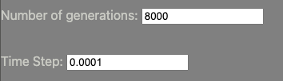

You can either chose to simulate a system in which each population will follow the model directly, or introduce a randomization parameter (either normally or uniformly distributed) that can model systems such as those with immigration and emmigration.
If you choose to select either stochastic method, an input box will appear asking for the magnitude of that change. We recommend values around 1%. If nothing is input, the regular model will be used instead of the stochastic one.
For the number of generations, make sure to enter at least 2 generations so that the model runs. A good number of generations will depend on your initial conditions as well as the time step.
For time step, you should enter a value less than 1 (but more than 0) for best results (e.g. around 0.0001). A smaller number here will mean a more precise simulation. However, keep in mind that each generation will update populations one time step, so if you lower timestep your model will appear to run for less time.
Some good parameters for number of generations and time step are 8000 and 0.0001, for example.
Next, we want to enter the information for each species. Two important things to note:
- Each species should have their own name. If two species are given the same name, the model will still run, but will overwrite previously named species.
- Predators should have a negative growth value. Prey should have positive growth. This will ensure that the predator-prey system functions given the version of the model implemented here.
It can be difficult to know what values will work for the matrix to produce a stable model. However, a good rule of thumb is to put negative values along the diagonals (self-interacting values), negative values for predators actin on prey, and positive values for prey acting on predators.
The interaction values are given by the order of input from the species parameters. That is, if the first row is "Bear" and the second is "Rabbit", then the matrix will look as follows:
| Bear | Rabbit |
|---|---|
| Bear self-interaction | Effect of rabbit on bear (bears eat rabbits, so positive) |
| Effect of bear on rabbit (rabbits get eaten, so negative) | Rabbit self-interaction |
Clicking on the "Add more species" button will create a new row in the species parameters and will change the size of the matrix accordingly. It is best to press this button before inputting parameters into the matrix.
Once all the parameters are set, the Submit button will create a PNG file and display the graph. Click on the browser's back arrows to input new parameters or change existing ones.